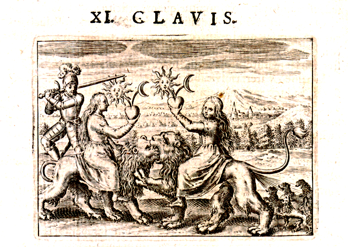
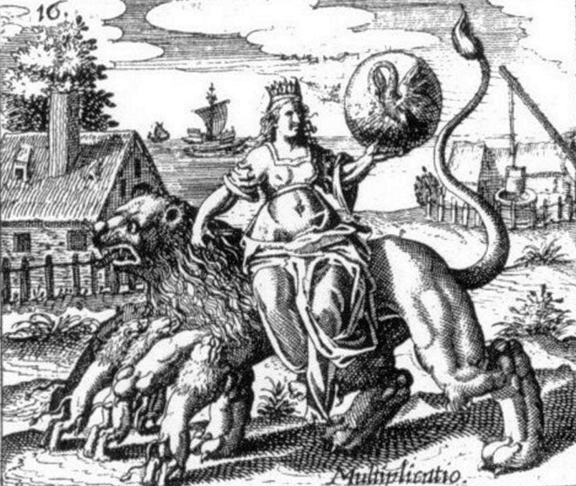
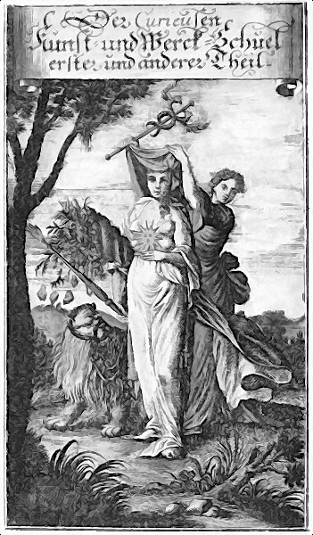

Pymander Interpretation
The key here is to recognise the Lion as the symbol of Ops (aka Rhea or Cybele) wife of Saturn. She deceives Saturn by replacing newborn Jupiter with a rock. The card represents the giving back of falsehood to the Seventh Governor.
[P57] To the seventh (Saturn), ensnaring falsehood.
Ops is generally regarded as a nature or crops Goddess. In the Pymander, the four elements issue for from a cloud, in a manner reminiscent of birth. Thus, this card may represent the cloud in the Pymander. RWS aces have the four elemental symbols issue from a cloud via a hand, which is a strong indication that Waite believes the cards to refer to the Pymander.
Discussion
Note that in the RWS deck, there are lemniscates (sideways figure-8) over the heads of both the Magician and Strength. This may well be an indication that both are an characters were created directly by God. The lemniscate is sometimes considered to represent the union of soul and spirit, and so Waite may have chosen it to indicate the next level down, below himself, being created by God directly. The Demiurge certainly was, and the other figure in the first few stanzas is the cloud, the moist female principle, that gives birth to the four elements. This implies that Ops may also represent the female principle, or Great Mother, as she is sometimes known.
There is also an implication that the soul of the first man (Adam Kadmon) also warrants a lemniscate, although we do not see any others in the deck.

Figure 15 - Women riding Lions
The Eleventh Key of Basil Valentine
In Figure 14 above, comment has been made of the mystery of the right-most lion apparently issuing forth four other, smaller lions. However, once we associate the Strength card with Saturn’s wife Ops, then we might re-interpret this as the creation of the four elements by Nature (even though the artist seems to have put a mane on a female lion). The knight would represent the battle between mankind and the titans led by Saturn, and overall the quandary of Ops, torn between supporting her husband and saving her son – fighting herself. The right-hand lion appears to be dominating the Left, which could indicate Ops rejecting Saturn.

Figure 16 - Emblem 16
from J.D. Mylius Philosophia Reformat, Frankfurt, 1622
Similarly, in emblem 16 above there appear to be four young lions suckling at the breast of the larger Titan lion ridden by Ops. Once again, the anatomy is poor, in that the cubs have manes also, and the suckling should occur on the abdomen.
This card in other decks had names that may be considered synonymous to Strength. The Visconti-Sforza deck (15th century) called it Fortitude (fortitudo), and various Tarot de Marseilles (TdM) decks called it Force, which we can recognise as a reference to the phrase Force of Nature.
Force of Nature
The concept of "Force" or "Force of Nature" was a common theme in philosophical and esoteric circles during the Renaissance and Enlightenment periods. This idea was influenced by ancient Greek philosophers like Plato, who discussed the concept of the "Anima Mundi" or the "World Soul" in his works, particularly in the "Timaeus".
The "Force of Nature" concept was also explored in the context of alchemy, Hermeticism, and natural philosophy. It referred to the idea that there is a fundamental, driving force behind the natural world, which governs the cycles of growth, transformation, and decay.
There are a great many female mysteries referred to by this card. For those seeking more depth, and not of faint heart, I recommend: Coelum Terrae or The Magician's Heavenly Chaos by Thomas Vaughan, made available by Adam Mclean at http://www.levity.com/alchemy/vaughan1.html
The Greek name for this Goddess is Rhea, which means ease, or flow – to go with the flow perhaps.

Figure 17 - Alchemical image of Mother Nature as the White Virgin, with Lion
Figure 15 above shows Ops/Rhea with the solar child Jupiter in her arms. The White Virgin takes on the green mantle of motherhood.
The Lion was also the mount of Inanna/Ishtar, a Mesopotamian/ Sumerian goddess who shows strong links to the Star card. See the section on the Star card for details.